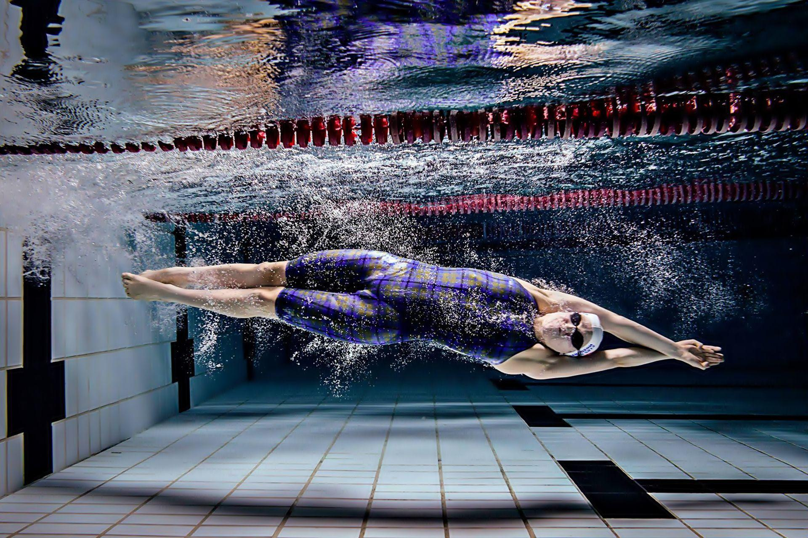
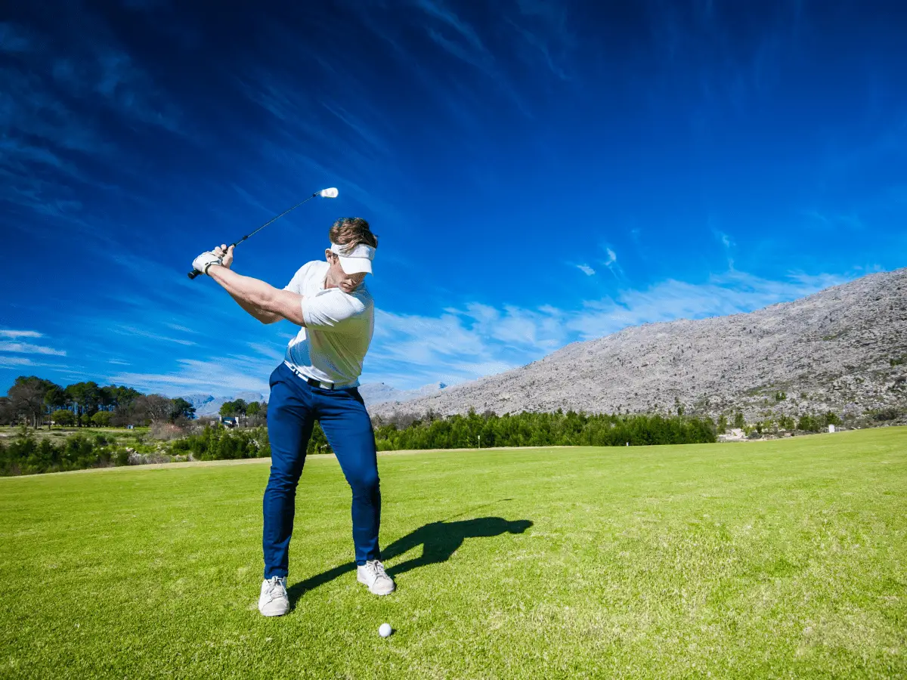
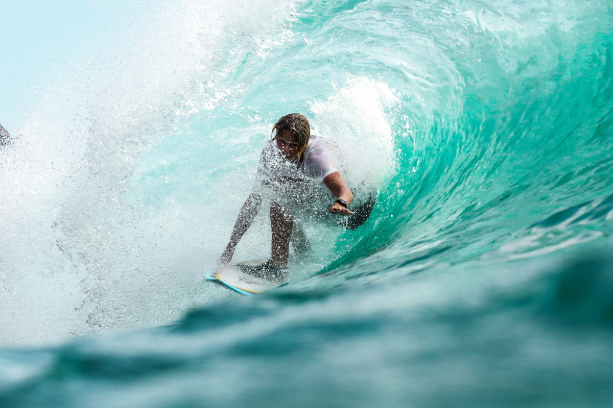

Individual sports are also known as solo sports. These are sports that one competes in by oneself. Individual sports are characterized by the fact that participants do not have teammates to rely on to achieve the main objective. Individual sports allow athletes to go at their own pace since they are not affected by other athletes' progression.
Individual Sports
SWIMMING

Swimming is the act of propelling one's body through water with the aid of limbs to move in the desired direction. Although amphibians additionally possess the potential to go together with this kind, aquatic life essentially relies on motility to survive. Humans use swimming for a variety of activities, including sports, fitness, and enjoyment. The medium might be either calm, agitated, or moving quickly.
The human body can’t float in water as its relative density is slightly less than that. Hence, it has to be in motion. Researchers have found swimming as one of the best exercises to keep human bodies healthy and active, healing numerous breathing issues and providing comfort to joints of bones. As sports, it offers many styles to perform skills and a healthy environment to compete individually as well as in a team. swimming competitions were held in the sea but after some time, switched over to pools. The first races in three different strokes (backstroke, breaststroke, and freestyle) were held only for men but in 1912, the races for women also started. The biggest competitions of swimming are the Olympics and World Championships initiated in 1973.
GOLF
Scotland was where golf was created and where it was first played. Golf immediately spread to England and from there throughout the world. The Honorable Company of Edinburgh Golfers, the first golf club, was established in Scotland in 1744.
Golf is an individual sport played by hitting a ball with a club from a tee into a hole. The object is to get the ball into the hole with the least number of swings or strokes of the club. Golf is a hugely popular sport that is enjoyed by people of all ages. Golf is often played competitively, but can also be played for relaxation and just to enjoy the outdoors.
A golf course is a location where golf is played. The course is not a set size or standard, unlike in many sports. The length and structure of the courses vary. This is only one of the many facets of golf that make it so well-liked and captivating. Many people enjoy trying out and engaging with various courses. Courses can be very different depending on the local terrain. Imagine how different a flat desert course is from a hilly forest course. Once the golf ball is on the green, the golfer will use a putter to roll or "putt" the ball into the hole. The number of strokes is counted up for the hole and recorded on a scorecard. At the end of the course, all the strokes are totaled and the golfer with the fewest number of strokes wins.

SURFING

The majority of oceans and seashores are where surfers engage in this outdoor water sport. In this activity, the participant often referred to as a surfer begins at a particular distance from the shore and, while standing on a surfboard and using the waves as propulsion, comes closer to the shore.
Earlier surfboards were made of wood which made them heavier and bulkier. But current surfboards are made of fiberglass materials that make them lighter and easier to carry. The shape of each wave, the force and direction of the wind, the height of the tide, the current, and many other factors must all be precisely assessed by surfers in order to effectively ride a wave.